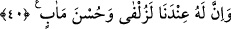
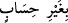
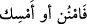

emrinden kaynaklanmıştır. Bir talep ilâhî emirden ileri geldiği ve bu emri yerine getirip
ibâdet etme maksadına mâtuf olduğu zaman, talep sâhibi bu talebi için hiçbir soruşturma
ve azarlanmaya uğramadan tam bir ecir alır. Böylesine büyük ve değerli bir
hükümranlık ve bağış da onun âhiretteki hükümranlığından hiçbir şeyi eksiltecek
değildir. Ayrıca başkaları sorgulandığı gibi o da sorgulanacak değildir.
Hz. Süleyman’ın bu hükümranlığı yüzünden cennete giren en son peygamber olacağı
şeklindeki rivâyete gelince, bu rivâyetin sahih olduğunu düşünecek olursak bu, cennet
derecelerinde onun diğer peygamberlerle eşit olmasını engellemez. Cennete sırf geç
girecek olması da sorgulanacağı anlamına gelmez.
Ayrıca “zenginlerin cennete fakirlerden beşyüz sene sonra girecekleri”[33] rivâyet
edilmiştir.
() ifâdesi ‘bağışlama’nın durumunu bildiriyor da olabilir ki o zaman mânâ
şöyle olur: Bu, sana hesapsız olarak verdiğimiz bir bağıştır, çünkü son derece fazladır.
Günlük kullanımda da çok sayıda olan şeylere ‘haddi hesabı yok’ denir.
İfadenin,‘bağışlama’nın sılası olması da mümkündür (Bu, bizim sana hesapsız
vergimizdir). Aradaki () “ister ver ister esirge” ifâdesi ise her iki takdire
göre de i’tirâzî bir cümle olmuş olur.
40. Doğrusu onun, bizim katımızda büyük bir değeri ve güzel bir yeri vardır.
“Doğrusu onun” için dünyadaki bu büyük hükümranlığın yanısıra âhirette de “bizim
katımızda büyük bir değeri,” bir yakınlık, güzel bir gelecek “ve güzel bir yeri” yâni
cennet “vardır.”
Hadiste buyurulur ki: “Süleyman b. Dâvûd’a verilmiş olan hükümranlık onda ne gibi
bir değişiklik meydana getirmiştir, dersiniz? Bu, onun tevâzu ve tazarruunu
artırmaktan başka bir şey yapmamıştır. Rabbine karşı olan bu tevâzuundan dolayı
gözünü gökyüzüne bile çeviremezdi.”[34] Yâni Süleyman (a.s.) mezkûr yakınlık ve
cenneti bu sâyede haketmiştir. Ne mutlu, bir zengin görünümünde olup da fakir olan bu
zâta!
Bu âyette bir insan insaniyette kemâle erdikçe illahî feyzi vâsıtasız olarak kabûle
elverişli hâle geleceğine ve bu feyzin bir neticesi olarak Allah’ın gökteki melekleri,
tıpkı “Âdem’e secde edin” emr-i ilâhîsi ile Âdem’e boyun eğdirdiği gibi, böyle birine
de boyun eğdireceğine işâret edilmektedir. Aynı şekilde bu âyet, Süleyman’a (a.s.)
boyun eğdirdiği gibi böyle birine de yeryüzündeki insanları, cinleri, şeytanları, ehlî
olmayan hayvanları ve kuşları da ona boyun eğdireceğini gösterir.
Şöyle ki gökteki ve yerdeki bütün varlıklar kâmil bir insanın vücudunun birer